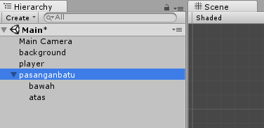

4. Persiapan Asset Game
Pendahuluan
Pada praktikum ke-4 ini, kita akan mencoba membuat project flappy bird 2D. Sebagian besar praktikum ini diambil dari materi perkuliahan Bapak Zikky begitu juga dengan asset game yang digunakan. Buat project baru 2D dengan nama “flappycopter”, atur aspect ratio 16:9 pada game tab.
Persiapan Asset Game
Terdapat 4 file gambar yang dapat ditambahkan ke project view, yaitu: atas.png, bawah.png, background.png, dan player.png. Buat folder Images, Prefabs, dan Scripts pada project window. Masukkan ke-empat file gambar tersebut diatas pada folder Images.
Game Background
Masukkan gambar background.png pada scene view dan jadikan background game flappycopter ini. Letakkan game object background pada posisi dan rotasi pada titik (0,0,0). Rubah scale X dan Y pada Transform Inspector dari object background dengan nilai 2.3. Tampilan background akan seperti gambar berikut:
Pastikan pada property Inspector sprite renderer order in layer bernilai 0. Order in layer ini penting untuk meletakkan object pada lapisan scene background atau foreground. Semakin kecil order in layer, maka object akan dapat ditumpuk oleh objek dengan order in layer yang lebih tinggi. Jangan lupa untuk menyimpan scene dengan nama “Main”.
Game Player
Masukkan gambar player.png pada project windows kedalam scene view. Pada object player lakukan sesuatu berikut ini:
Rubah Inspector Transform posisi x dan y menjadi -7 dan 2, seperti pada gambar berikut:
Rubah property Inspector sprite renderer order in layer bernilai 1.
Tambahkan komponen Rigidbody2D pada Inspector object player.
Buat script baru pada object Player dengan nama “PlayerControl”, dengan rincian kode sepeti berikut: JumpForce: merupakan Vector2 yang digunakan sebagai nilai ambang batas fungsi AddForce.
AddForce: merupakan method yang hanya bisa diakses jika object memiliki komponen Rigidbody 2D didalamnya. Method ini memaksakan suatu pergerakan tiba-tiba yang diatur dengan nilai vector2. Dalam praktikum ini, karena efek gravitasi dari rigidbody, object akan selalu turun kebawah. Maka dari itu, kita akan memaksa player untuk seakan-akan melompat keatas saat spasi ditekan. Maka dari itu, yang diberi nilai hanya Vector 2 sumbu Y saja, yaitu dengan nilai 300. Velocity pada rigidbody 2D dibuat Vector2.Zero atau [0,0] untuk mengembalikan kecepatan objek menjadi 0.Jalankan unity dan lihat apa yang terjadi jika keyboard spasi di tekan.
Tambahkan polygon collider 2D pada object player.
Rubah kode program PlayerControl menjadi seperti dibawah ini:
Tambahkan header library Unity.SceneManagement:
using UnityEngine.SceneManagement; digunakan untuk mengakses fungsi SceneManager.Load(
Didalam update setelah scope dari Input.GetType(..)… atau setelah kurung kurawal tutup dari scope Input.GetType(..)., tambahkan:
Vector2 screenPosition =
Camera.main.WorldToScreenPoint (transform.position);
Kode program diatas digunakan untuk mengambil posisi x dan y dari player yang relatif terhadap world scene.
Setelah itu, tambahkan kode untuk memberi batasan lebih tinggi dan terjatuh:
if (screenPosition.y > Screen.height || screenPosition.y < 0)
Die (); kemudian, buat method Die() dibawah dari method Update():
void Die()
{
Debug.Log ("game over");
SceneManager.LoadScene ("Main");
} Terakhir adalah tambahkan fungsi OnCollisionEnter2D, jika objek player nanti menabrak apapun rintangan atau obstacle akan mati.
void OnCollisionEnter2D(Collision2D coll)
{
Die ();
} - Jalankan unity dan lihat apa yang terjadi.
Game Obstacles
Selanjutnya adalah membuat rintangan-rintangan atau obstacles dari game flappycopter ini. Berikut adalah tahapannya:
Masukkan gambar atas dan bawah kedalam Scene view. Pastikan order in layer bernilai 1.
Skala gambar atas dan bawah untuk x dan y bernilai 2.3.
Posisikan gambar atas dan bawah secara berhadapan seperti gambar berikut:
Tambahkan polygon collider 2D pada object atas dan bawah.
Buat game object kosong dengan cara klik GameObject->Create Empty di menu tab. Atau ctrl+shift+n.
Lihat hierarchy window dan rename “GameObject” menjadi “pasanganbatu”.
Tarik object “atas” dan “bawah” kedalam “pasanganbatu” pada hierarchy window, seperti gambar berikut: 
Tambahkan Rigidbody 2D pada Inspector dari game object “pasanganbatu” Kemudian rubah body type menjadi “Kinematic” dan jangan centang (uncheck) simulated atau pada versi unity 5.6 kebawah centang “isKinematic”. Digunakan agar tidak terpengaruh oleh grafitasi dan pantulan yang diakibatkan benturan objek.
Buat script “ObstacleInAct” pada Inspector “pasanganbatu”, seperti pada gambar berikut: Kode tersebut berguna untuk menggerakan pasangan batu secara mundur dengan kecepatan -4, ketika game berjalan.
Jalankan unity dan lihat apa yang terjadi.
Tarik object pasanganbatu dari hierarchy window kedalam folder Prefabs untuk agar dapat menjadi object prefab.
Hapus game object pasanganbatu dari hierarchy window.
Buat game objek kosong dan rename menjadi “ObstacleGenerator”.
Tambahkan script baru pada Inspector “ObstacleGenerator” dengan nama “GenerateObs”. Berikut adalah isi dari kode “GenerateObs”:
 Method/fungsi InvokeRepeating digunakan untuk memanggil method CreateObstacle setiap 1.5 detik dengan lama eksekusi dari method tersebut terbatas hanya 1 detik.
Method/fungsi InvokeRepeating digunakan untuk memanggil method CreateObstacle setiap 1.5 detik dengan lama eksekusi dari method tersebut terbatas hanya 1 detik.
Instantiate digunakan untuk instance object secara otomatis, disini akan dipanggi objek pasanganbatu.Lihat pada Inspector dari ObstacleGenerator dan Tarik pasanganbatu dari folder Prefabs di Project Window kedalam variabel rock, seperti gambar dibawah ini:
Jalankan unity, dan lihat apa yang terjadi.
Agar pemain tidak bosan karena lokasi dari obstacle statis. Jadi buat lokasi obstacle menjadi random dengan cara menambahkan kode berikut dibawah GetComponent
().velocity = veloc; pada script ObstacleInAct:
float range = 2;
transform.position = new Vector3 (transform.position.x,
transform.position.y - range * Random.value,
transform.position.z); - Jalankan Unity dan lihat apa yang terjadi.
- Jika terjadi bug, batu terlalu kebawah maka perkecil nilai range.
Scoring System
Score akan menggunakan GUI Label pada Unity. Penjelasan GUI akan dijelaskan lebih lanjut pada pertemuan berikutnya. Namun demikian, kita akan mencoba membuat GUI Label untuk menampilkan score pada game flappycopter dengan dipanggil lewat kode. Berikut adalah tahapannya:
- Masuk pada script “GenerateObs”.
- Buat variabel bertipe int dengan nama score dengan di-assign nilai 0.
- Tambahkan Method OnGUI untuk menambahkan GUI Label pada scene game:
void OnGUI()
{
GUI.color = Color.black;
GUILayout.Label ("Score: " + score.ToString());
}- Tambahkan kode: score++; setelah Instantiate pada method CreateObstacle.
- Jalankan Unity dan Voila!! Flappycopter sudah jadi!
Latihan (Optional)
Kembangkan game flappycopter dengan semua metode yang sudah diajarkan sebelumnya. Contohnya, kita dapat menambahkan koin atau life point. Gunakan kreatifitasmu!
KUMPULKAN:
Screenshoot game tab dan simpan dengan nama sc_04_01.jpg
REFERENSI
Mekanisme Pengumpulan Praktikum Mingguan
Tidak ada yang harus dikumpulkan pada praktikum kali ini.